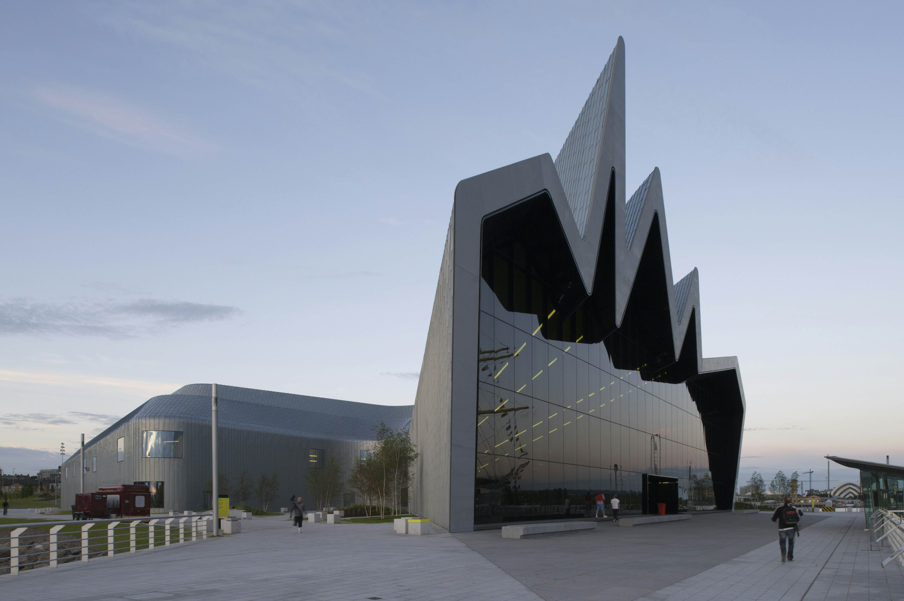
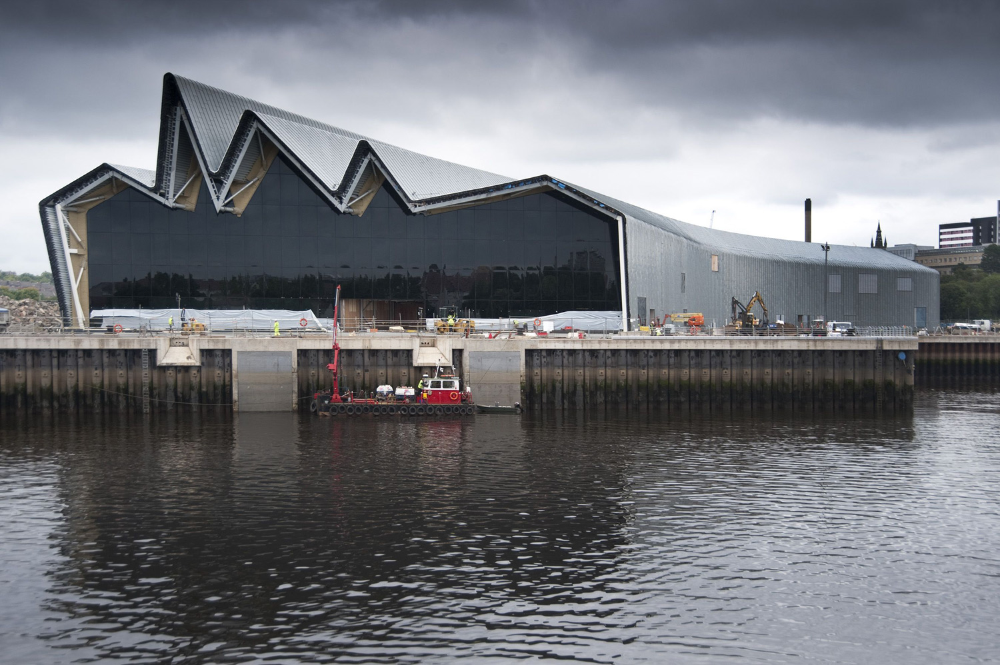
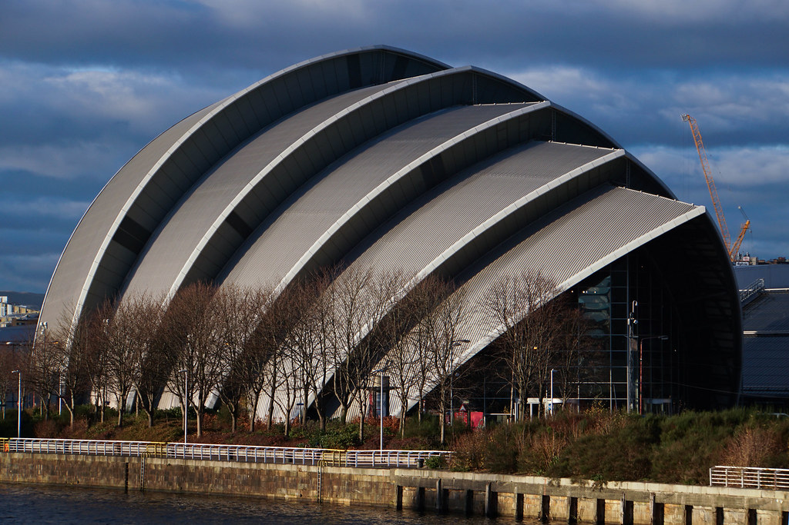
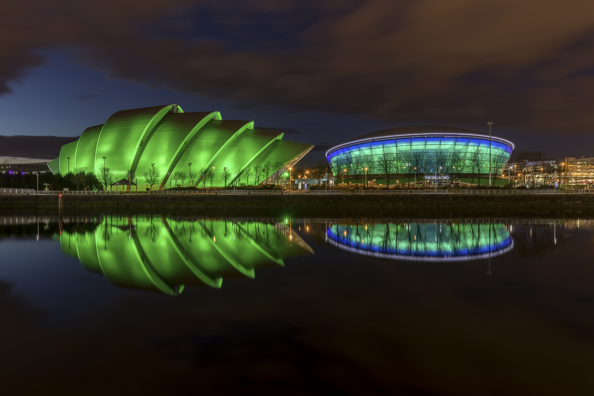
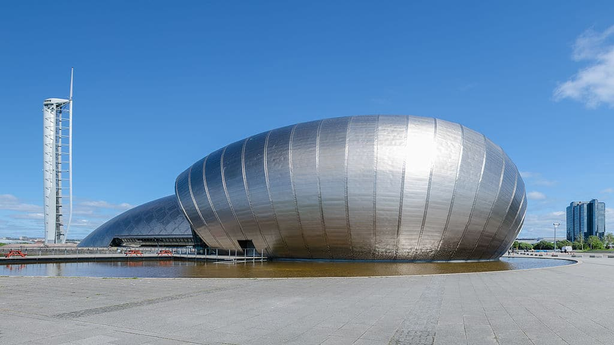
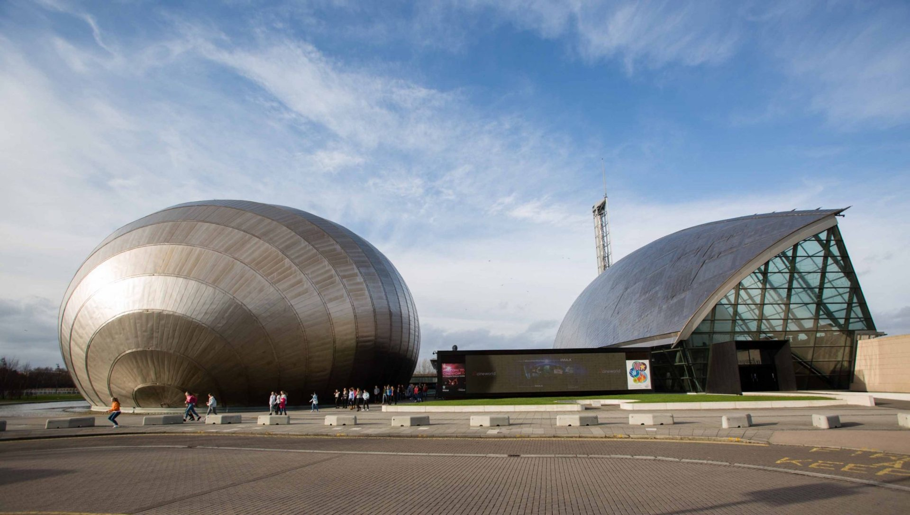

Glasgow's Contemporary Architectural Marvels
Glasgow has emerged as a hub for innovative and daring architectural designs that push boundaries. The city's modern architecture reflects its progressive spirit, combining cutting-edge technology with artistic expression to create structures that are both functional and visually stunning.
From Zaha Hadid's fluid forms to Foster + Partners' geometric precision, Glasgow's contemporary buildings showcase the best of 21st century design while respecting the city's rich architectural heritage.
Riverside Museum
Designed by Zaha Hadid Architects
The Riverside Museum, Glasgow's award-winning transport museum, represents a bold step forward in museum design. Its dramatic zinc-clad roof sweeps up and down like a wave, creating a dynamic structure that mirrors the motion of the vehicles displayed inside. The museum's innovative layout allows visitors to explore Glasgow's transport history in a completely immersive environment.

The striking wave-like facade of the Riverside Museum

Spacious interior showcasing vintage vehicles
SEC Armadillo
Designed by Foster + Partners
Officially known as the Scottish Event Campus Auditorium, this iconic venue earned its "Armadillo" nickname from its distinctive overlapping curved panels that resemble the animal's armor. The building's innovative design provides exceptional acoustics while creating a memorable landmark on Glasgow's waterfront. Its bronze-colored aluminum cladding changes appearance with the weather, reflecting Glasgow's dynamic character.

The Armadillo's distinctive shell-like exterior

Nighttime illumination highlighting the unique structure
Glasgow Science Centre
Designed by BDP
The Glasgow Science Centre complex, with its iconic titanium-clad tower, has become a symbol of the city's commitment to innovation and education. The 127-meter tall Glasgow Tower offers breathtaking 360-degree views of the city while demonstrating principles of engineering and renewable energy. The main building's curved glass facade reflects the River Clyde, creating a dynamic relationship with its waterfront location.

The Science Centre with its iconic leaning tower

Interactive exhibits inside the Science Centre
More Modern Marvels in Glasgow
- The SSE Hydro – A state-of-the-art entertainment venue
- Glasgow Tower – The tallest freestanding structure in Scotland
- Quay Plaza – Innovative residential development on the Clyde
- STV Headquarters – Striking glass-fronted broadcasting center